| 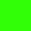 | C(5) = 6 | C(6) = 9 |  C(7) = 11 | 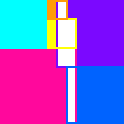 C(8) = 13 |
The corresponding covering problem has not been considered. What is the largest square that can be completely covered with untilted squares of side 1, 2, 3, . . . n ? How much do the answers change if the squares are allowed to be at any angle? In particular, what is the largest square that can be completely covered with squares of sides 1, 2, 3, and 4?
Philippe Fondanaiche found the best known values for C(n) for n≤22. Then Maurizio Morandi improved the result for n=13, and George Sicherman proved that was the best possible. Here is table of small values of C(n):
| n | 1 | 2 | 3 | 4 | 5 | 6 | 7 | 8 | 9 | 10 | 11 | 12 | 13 | 14 | 15 | 16 | 17 | 18 | 19 | 20 | 21 | 22 |
|---|---|---|---|---|---|---|---|---|---|---|---|---|---|---|---|---|---|---|---|---|---|---|
| C(n) | 1 | 2 | 3 | 4 | 6 | 9 | 11 | 13 | 16 | 18 | 21 | 24 | 28 | 31 | 34 | 38 | 41 | 45 | 49 | 53 | 57 | 61 |
|
| 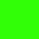 | C(5) = 6 | C(6) = 9 | C(7) = 11 | 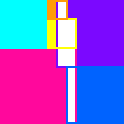 C(8) = 13 |
| 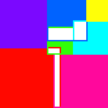 C(9) = 16 | 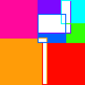 C(10) ≥ 18 | 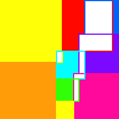 C(11) ≥ 21 |
| 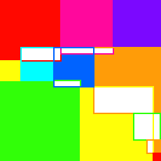 C(12) ≥ 24 | 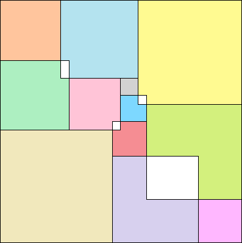 C(13) ≥ 28 (Maurizio Morandi) | 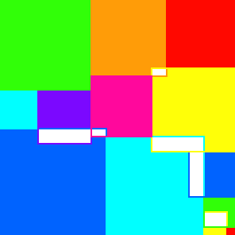 C(14) ≥ 31 |
Trevor Green and I managed to prove that C(n) is always an integer. The proof: For any covering by untilted squares, there is a covering at least as good involving squares only placed at lattice points. To see this, shift squares not at lattice points upward and right until they are.
Trevor Green also found simple proofs for C(4)=4 and C(5)=6. Essentially, they show that any placement of the squares results in overlaps which are too large. He suggests that a computer could be used to prove optimality for higher values of C(n). He expects the answers to be very close to  √n(n+1)(2n+1)/6
√n(n+1)(2n+1)/6 .
.
In 2002, Sasha Ravsky sent me a proof that C(n)/n3/2 ≥ 2√3/9.
Trevor Green found coverings for D(4) and D(5). But Maurizio Morandi improved both coverings, and found some for D(8) and D(10) in 2016:
| 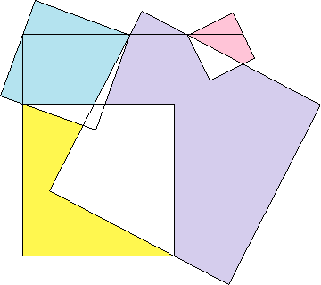 D(4) ≥ 4.3685 | 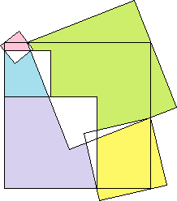 D(5) ≥ 6.3610 |
 D(8) ≥ 13.2655 | 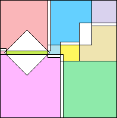 D(10) ≥ 5(6+√2)/2 = 18.5355 |
Here is table of small values of D(n):
| n | 1 | 2 | 3 | 4 | 5 | 6 | 7 | 8 | 9 | 10 |
|---|---|---|---|---|---|---|---|---|---|---|
| D(n) | 1 | 2 | 3 | 4.3685 | 6.3610 | 9 | 11 | 13.2655 | 16 | 18.5355 |
Trevor Green was also interested in using n squares of equal size to cover the largest square possible. Call the side of the largest square E(n). Here are his results:
| n | 1 | 2 | 3 | 4 | 5 | 6 | 7 | 8 | 9 | 10 | 11 | 12 | 13 | 14 | 15 |
|---|---|---|---|---|---|---|---|---|---|---|---|---|---|---|---|
| E(n) | 1 | 1 | 1.272 | 2 | 2 | 2 | 2.2071 | 2.4142 | 3 | 3 | 3 | 3 | 3.1213 | 3.2954 | 3.4360 |
Most of his optimal coverings look like this small example:
If you can extend any of these results, please e-mail me. Click here to go back to Math Magic. Last updated 3/29/16.